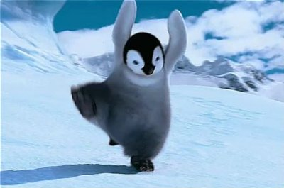

15.04.2021
Ciekawostka,pingwiny trenują karate
Okazuje się że baby pingwiny są uczone karate przez gej pary pingwinów. Podobno gej pary pingwinów chcą podbić normalne pingwiny i zmusić je siłą do atakowania ludzi oglądających pingwiny. Młode już w jajkach wariują i ćwiczą nowe ciosy, dlatego też są w stanie z nich wyjść, inne ptaki odgapiły ten pomysł. Karate pingusie potrafią zajebać takiego kopa, że jego ofiara szybuje po Antarktydzie przez następpne 3 dni. Podsumowując, jeśli widzisz pingwina w pozycji takiej jak powyżej, najlepiej spierdalaj jeśli ci życie miłe.